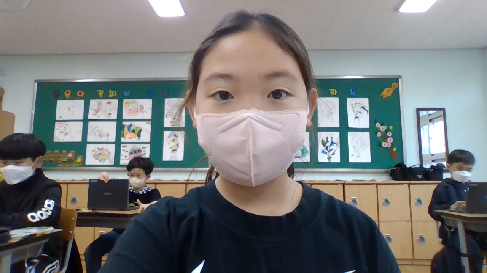

<h1>피딩방법</h1>

<i>디쉬피딩</i>하기<br/>
<b>디쉬피딩</b>이란 도마뱀이 먹이를 자유롭게 먹을 수 있는 방법 중 하나이다.<br/>
디쉬피딩은 접시를 놔두고 먹이와 영양제를 넣어놓으면 자유롭게 먹이를 섭취할수있다.<br/>
<b>핏셋피딩</b>은 먹이를 핏셋으로 집어주는 방법이다.<br/>
이 방법은 주로 먹이를 먹는지 안먹는지 확인하는 방법이다.<br/>
</b>자율피딩</b> 먹이를 사육장에 풀러놓는 방법이다.<br/>
사냥을 하며 먹을 수 있는 방법이다.<br/>

